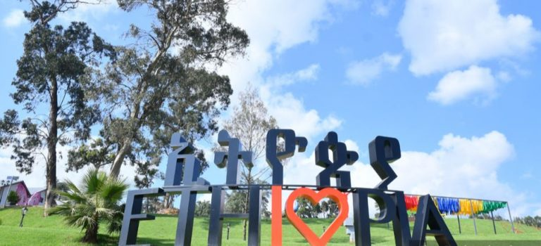

There are five entrances to Entoto Park. Which entrance is the most convenient, and why? Before choosing on the entoto park entry sites, read descriptions of each entrance.
1. VIP Entrance – This gate is only available to VIP visitors to Entoto Park. This gate is only available to higher-ranking government officials, diplomats, and other VIPs, as indicated by Entoto Park administration.
2nd Entrance (Maya\ Maryam Gate) is from Shiro Meda to Entoto Maryam Church, 3.3 km from Shiro Meda Square. Maya Gate is the main entrance.
3rd Entrance (Sululta Gate) is on the road from Addisu Gebeya to Sululta, 3km from Addisu Gebeya square.
4rthEntrance (Dil Ber\ Addisu Gebeya Gate) is on the road that turns to the right from Dil Ber, 3km from Addisu Gebeya square.

The most known service providers are available in Entoto park. So visitors can get food and accommodation services at the same price as branches in Addis Ababa. Likewise, visitors can use as much as they want. But Entoto natural park has no entrance fee yet now.
You can see Adventurous and Recreational Activities you can exprience using This Link or you can just click the icon which says "Entoto"
If you want to get contact with Service providers you can get their Contact using This link
Unity Park Ethiopia has been open to visitors every day of the week since it’s inauguration on Oct 10, 2019. However, as of 𝐍𝐨𝐯𝐞𝐦𝐛𝐞𝐫 𝟏𝟖 𝟐𝟎𝟏𝟗 every 𝐌𝐨𝐧𝐝𝐚𝐲 its being used for overall maintenance of the park including cleaning and renovation as well. The National Palace was Built under Emperor Menelik II over a century ago, the Palace rests on 40,000Sqm of land. For generations, it has been viewed as the epicenter of political power, where the most powerful family in the land resides. The renovated compound incorporates several sights of interest to visitors, including an arena, a playground, a zoo,three churches,House of Royals and an imperial banquet hall
The Unity Park has no time limit for visiting and staying inside, but the park opens six days per week, starting from 9 am morning to 4 pm afternoon. The unity park is closed every Monday for cleaning the park. The ticket office of the park does not deliver services at lunchtime. On other hand, visiting the unity park takes about 3-4 hours. The park has the capability of accommodating about 1500 visitors per day.
Unity Park Payment Method In order to visit the Unity park of Ethiopia, first, buy an entrance ticket. So visitors can buy entrance tickets or pay for entrance by three methods. The first method of payment option is by sending a text to 6030. The second payment option is online payment using Ethio telecom. The third option is paying on the Commercial Bank of Ethiopia. The Last payment option is buying an entrance ticket at the gate of the Park. So, how much the entrance ticket costs?
Many Taxi services are available in Addis Ababa to travel where you want to go. No need to negotiate the price of taxi services. The payment rate of taxi services calculated based on travel distances. The calculation is available online on mobile apps or by multiplying the distance by a given unit price.
Top three convenient taxi services are